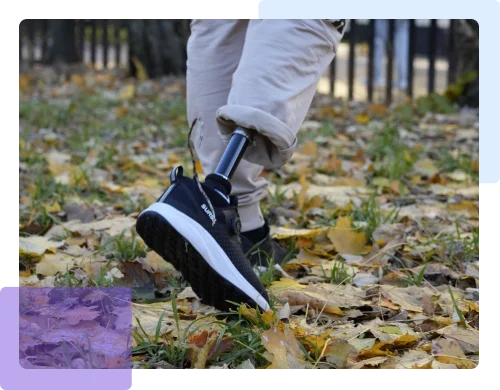
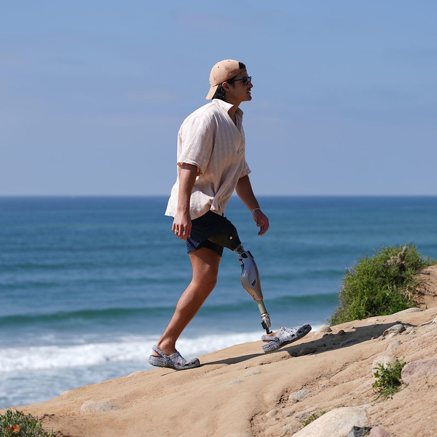
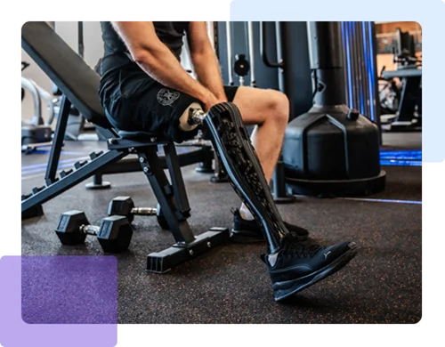
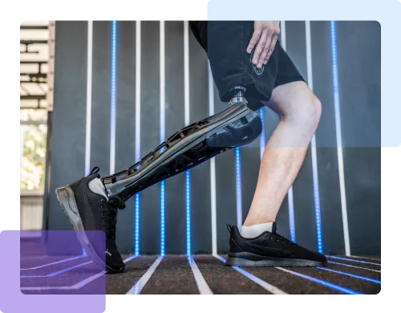
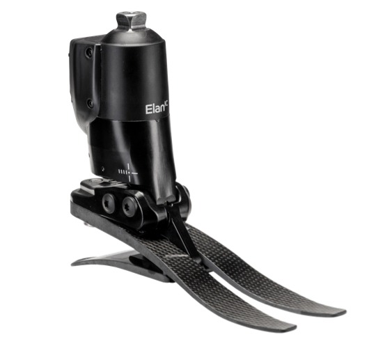
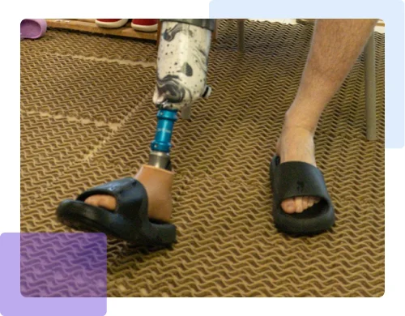
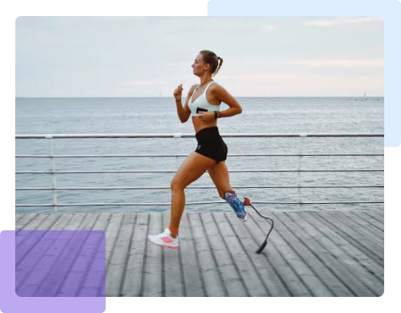
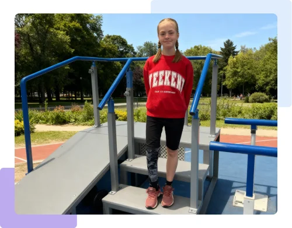
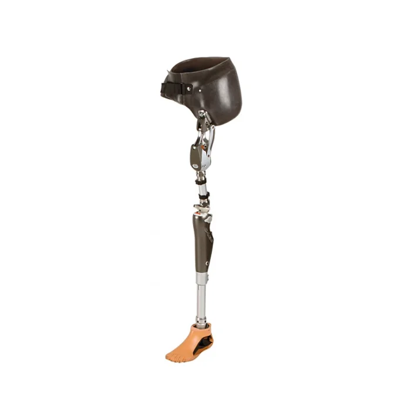
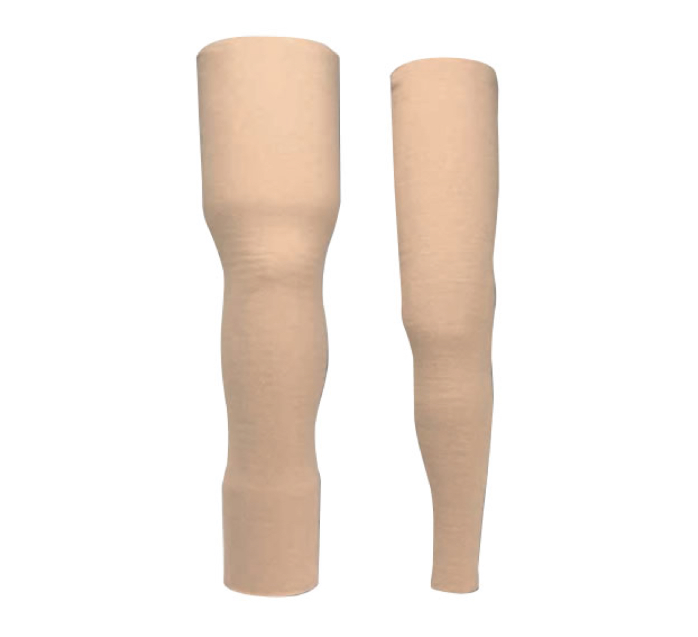

Классическая механическая система
- Без сложной электроники.
- Для прогнозируемых нагрузок.
- Проще в обслуживании.
Консультация, документы, протезная, дорога, жильё, обучение ходьбе и сервис — в одном понятном маршруте.
Выбор зависит от активности, безопасности, уровня ампутации и задач пациента.


Подбирается после осмотра: форма культи, кожа, сила пациента и ожидаемая нагрузка.
Подбираем не “тип вообще”, а конкретную конструкцию под уровень ампутации, активность и образ жизни.








Подбираем площадку и сопровождаем пациента до результата.
Выезд специалистов, обучение на дому, документы и сопровождение.
Мастерские, обучение, региональные филиалы и консультационные маршруты.
Протезирование — это замеры, гильза, комплектующие, примерка и ручная настройка под человека.
От первого запроса до обучения ходьбе и дальнейшего сервиса.
Ситуация, документы, город, сроки.
Тип протеза, комплектующие, площадка.
ИПРА, электронный сертификат, компенсация.
Замеры, гильза, узлы, подгонка.
Посадка, высота, устойчивость, походка.
Ходьба, рекомендации, обслуживание.
Первые шаги, опора, повороты, темп, бытовые сценарии.
В маршруте участвуют протезист, врач-ортопед и специалист по реабилитации.
Для иногороднего пациента важна простая логистика.
Пациент знает площадку, документы, маршрут, обучение и канал связи после установки.